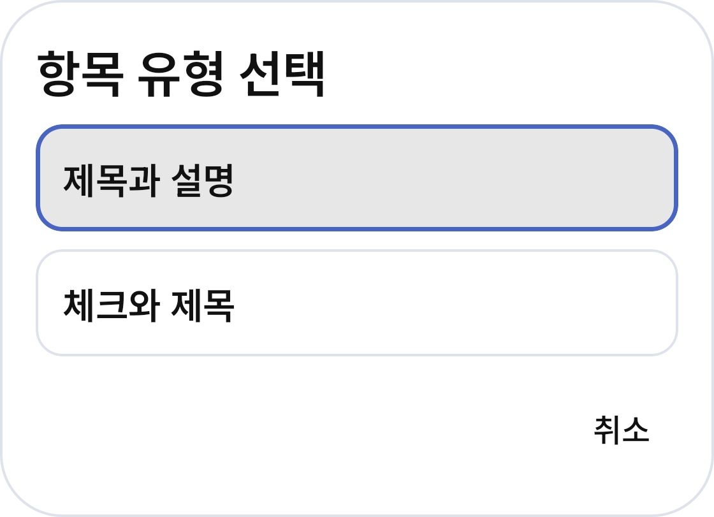
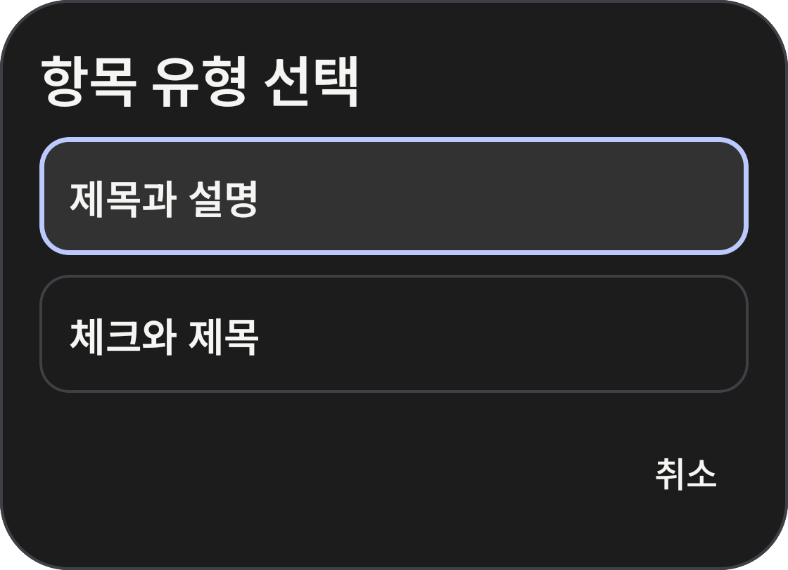

StudioDismissDialog
목록 선택·관리처럼 본문에서 동작하는 중앙 모달입니다.
- 컴포넌트 ID
studio-dismiss-dialog- 분류
- 모달
- 구현
StudioDismissDialog·MyWidget/app/src/main/java/com/mywidget/editor/core/designsystem/component/StudioModalContainers.kt:524- 주요 API
- title, onDismissRequest, content 및 호출부 Modifier
- 지원 상태
- 열림
- 닫기
- 본문 스크롤
- 변형
- 본문 액션 + 닫기
- 크기
- StudioDialog 공통 컨테이너
- 테마·토큰
- WidgetEditorPopupTokens
- StudioInspectorDefaults
- 접근성·사용 규칙
- 본문의 개별 동작은 자체 역할을 제공하고 하단 닫기 버튼은 목록과 분리됩니다.
- 공통 사용 여부
- 목록 템플릿 선택과 아이콘 라이브러리 관리에서 사용
- 설계 품질
- 선택을 즉시 전달하는 목록을 확인형 모달과 같은 외관으로 제공함
- 판단
- 중복 구현 통합
- 판단 근거
- 기존 AlertDialog 기반의 목록 선택·관리 컨테이너를 하나로 맞춥니다.
- 적용 상태
- 기존 닫기 전용 모달 대체
- 구현·문서
- 현재 소스 위치와 심볼 확인
- 렌더링
- 네이티브 캡처 있음
코드 예시
StudioDismissDialog("항목 유형 선택", {}, modifier = modifier) {
StudioSelectableCard("제목과 설명", selected = true, onClick = {})
StudioSelectableCard("체크와 제목", selected = false, onClick = {})
}Android 네이티브 예시
아래 캡처에 표시된 상태와 기기 조건을 확인했습니다.

411 × 891 dp · 560 dpi · 글꼴 1배 · API 35 · ko-KR
캡처 기준 HEAD
ff118cc8d · 소스 지문 73da2a0be891 · 2026-11-13T10:23:11.274577Z
411 × 891 dp · 560 dpi · 글꼴 1배 · API 35 · ko-KR
캡처 기준 HEAD
ff118cc8d · 소스 지문 73da2a0be891 · 2026-11-13T10:23:11.274577Z